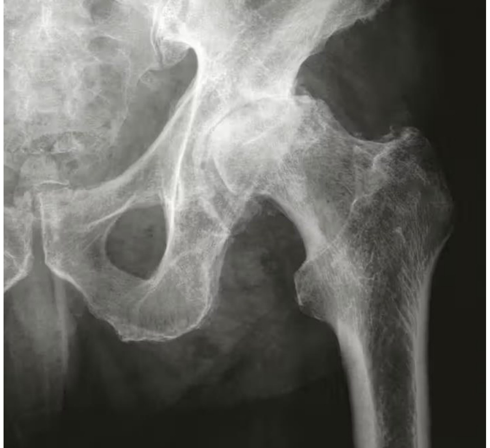
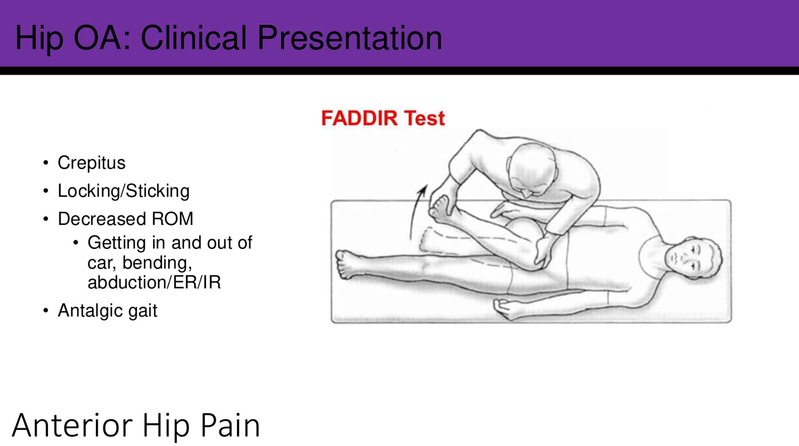
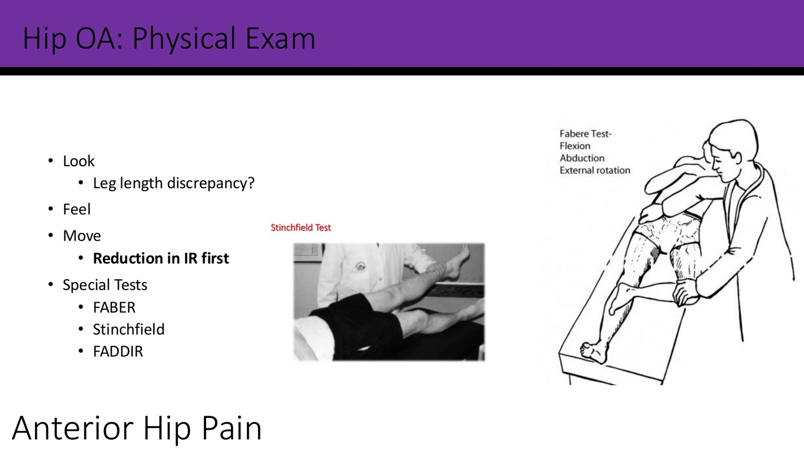
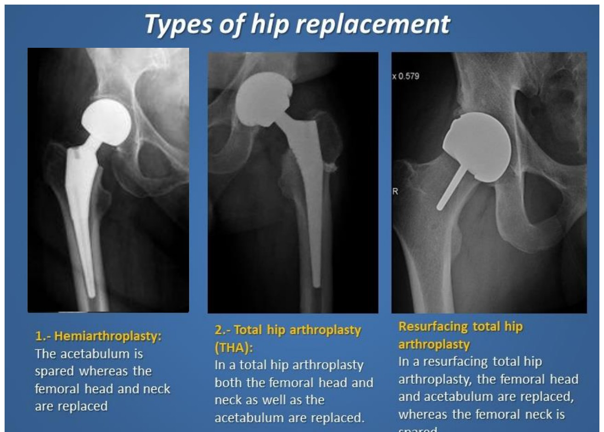
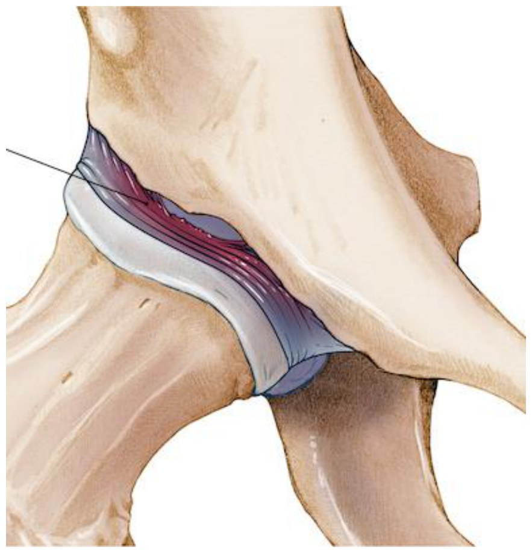
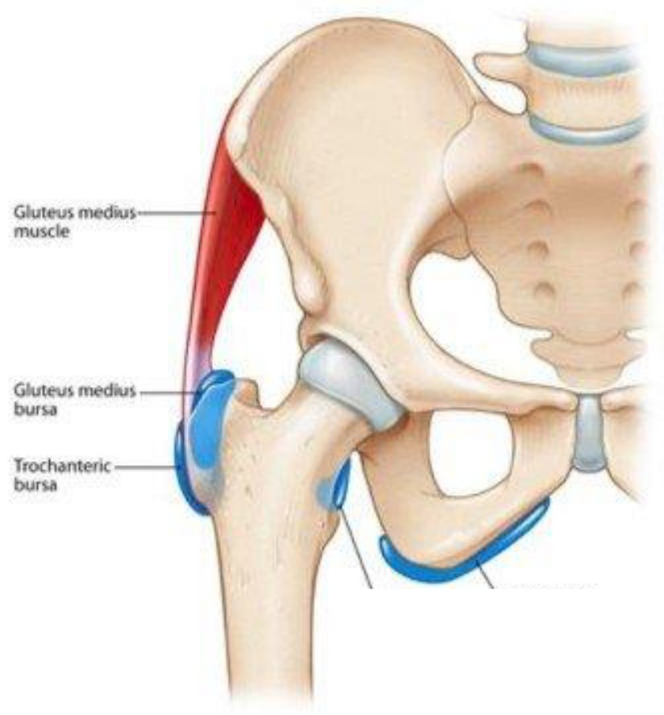
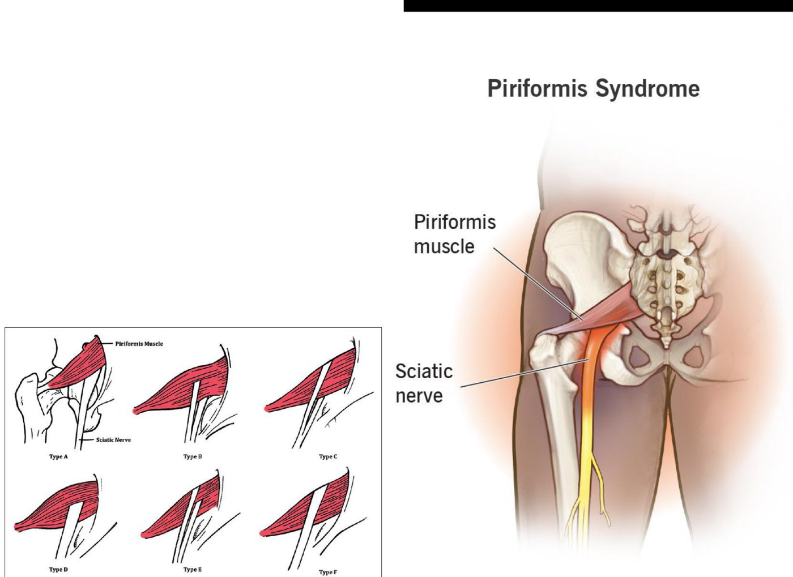
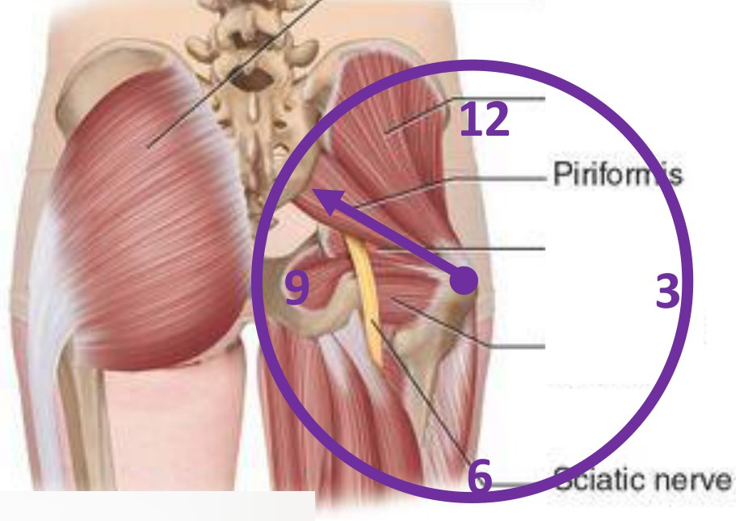

Clinical Approach to Hip Pain
- First ask where "hip" is. Groin or anterior pain is "true" hip pain, from inside the joint. Lateral buttock or thigh points to the greater trochanter (bursitis, gluteal tendinopathy). Posterior buttock points to piriformis, the sacroiliac joint or the back. Then list the structures in that spot.
- Hip osteoarthritis: groin pain (the C sign), morning stiffness under 30 minutes and stiffness after sitting, an antalgic gait, and internal rotation lost first. FABER, Stinchfield and FADIR reproduce the groin pain. It's a clinical diagnosis that an x-ray confirms, but the films don't match the symptoms. CT and MRI aren't needed.
- Treat OA with education, exercise (strong muscles steady an arthritic joint), weight management, tai chi and a cane. Add NSAIDs, acetaminophen or duloxetine, then an image-guided injection, and finally arthroplasty.
- A labral tear is vague groin pain with clicking, catching or locking, often in active women. The study of choice is an MR arthrogram. Avascular necrosis is groin pain after trauma, steroids (oral, IM or intra-articular), alcohol, lupus, sickle cell disease or radiation. New hip pain on steroids means an x-ray right away.
- Greater trochanteric bursitis and pain syndrome: point tenderness over the greater trochanter (if it isn't tender, it's very unlikely), can't lie on that side, worse with weight bearing, a positive Ober's test. The pain syndrome is a chronic gluteus medius and minimus tendinopathy that hurts on single-leg stance for 30 seconds. Treat it with abductor strengthening and load management; an injection only buys a window for rehab.
- "Can you put your socks on?" A patient with hip OA can't; a patient with the pain syndrome can. Piriformis syndrome is buttock pain made worse by sitting, sometimes with sciatic symptoms. Test it with PACE, Beatty, FAIR and Freiberg, and get an EMG if a nerve is involved. A snapping hip that doesn't hurt needs nothing.
Learning Objectives
- Localize hip pain to the anterior, lateral or posterior hip and build a differential from the structures there.
- Describe the presentation, examination, investigations and treatment of hip osteoarthritis, labral tears, avascular necrosis, greater trochanteric bursitis and pain syndrome, and piriformis syndrome.
- Tell greater trochanteric pain syndrome from hip osteoarthritis.
The module is by Dr. Jordan VanderEnde (physical medicine and rehabilitation). It has two recordings: anterior hip pain (11 minutes) and lateral and posterior hip pain (14 minutes). There are no notes; the knowledge checks are on the slides. It builds on the Hip Joint and the Gluteal Region & Thigh. With those two, it's the prep for Friday's Hip & Thigh lab.
Where Does It Hurt?
Patients point to very different places when they say "my hip hurts." Find out where, picture the anatomy under the patient's hand, and the differential follows.
| They point to | Think of | Differential |
|---|---|---|
| Anterior hip or groin | "True" hip pain: intra-articular | Arthritis (osteoarthritis, rheumatoid, septic; the specifics come in the rheumatology weeks), a labral tear, avascular necrosis. Also iliopsoas tendinopathy, treated like any muscle problem from MSK basics. |
| Lateral buttock or thigh | Tensor fasciae latae, gluteus medius and maximus, the greater trochanteric bursa | Greater trochanteric bursitis, greater trochanteric pain syndrome (gluteal tendinopathy) |
| Posterior buttock | Piriformis, the sacroiliac joint, the lumbar spine | Piriformis syndrome, sacroiliac joint problems, radiculopathy (later weeks) |
The overlap catches people out: arthritic pain sits deep in the joint, so it can wrap around the hip and be felt laterally too (see GTPS or hip OA).
Anterior (Groin) Hip Pain
Osteoarthritis, labral tears and avascular necrosis.
Osteoarthritis of the Hip
Osteoarthritis is a degenerative joint disease, the age-related "wear and tear" (there's a fuller introduction in the rheumatology weeks). There are two types: primary, which is idiopathic and seen in the elderly, and secondary, which is post-traumatic and seen in younger people.
| History | Physical exam |
|---|---|
| Anterior groin pain, often with a "C sign": the patient cups a hand around the side of the hip, because the deep pain wraps around. Onset can be gradual or sudden. It's worse with prolonged activity, and there may be night pain. Morning stiffness lasts under about 30 minutes; stiffness also comes on after prolonged sitting (long drives, desk jobs). Crepitus, locking or sticking. Lost range: trouble getting in and out of a car, bending, rotating. An antalgic gait, with a shorter stance phase on the sore side. | Look: a leg length discrepancy, either caused by the arthritis or predisposing to it. Feel: the joint is too deep to palpate. Palpation helps more for neighbours like iliopsoas tendinopathy, which is tender, and more so on resisted flexion. Move: internal rotation is lost first; abduction and external rotation go later. Special tests: FABER, Stinchfield, FADIR (below). |
| Test | How | Positive |
|---|---|---|
| FABER (flexion, abduction, external rotation) | The figure-four position. Press down on the opposite ASIS and on the bent knee. | Pain in the anterior groin. Always ask where it hurts: pain at the knee or the ASIS doesn't count. |
| Stinchfield | Supine, the patient lifts the straight leg, heel about a foot off the bed, against your hand: resisted hip flexion | Groin pain |
| FADIR (flexion, adduction, internal rotation) | Flex the hip and knee, then adduct and internally rotate | Groin pain |

Hip osteoarthritis on x-ray. Slide from the deck.
The FADIR test. Slide from the deck.
Stinchfield and FABER. Slide from the deck.Hip OA is a clinical diagnosis. An x-ray confirms it and can track progression, though that isn't always needed. Radiographic changes don't correlate with symptoms: some people with severe OA on film have few symptoms, and some with marked symptoms have little OA on film. CT and MRI aren't needed for the diagnosis. Order them to look for secondary causes, to rule other diagnoses in or out, or for surgical planning.
| Step | Treatment |
|---|---|
| Non-drug (always first) | Education about OA, its prognosis and progression. Exercise, above all strengthening the muscles around the hip, with a physiotherapist or trainer. Short of replacing the joint, nothing removes the arthritis, and muscle is the one thing we can change. An arthritic joint is inherently unstable; stronger muscles steady it, so flares come less often and are milder. Functional supports (work modifications, a sit–stand desk). Weight management, since extra weight puts more force through the hip. Tai chi. A cane for the antalgic gait. |
| Drugs | A short course of oral NSAIDs, acetaminophen, duloxetine |
| Injection | Corticosteroid, hyaluronic acid or PRP. Hip injections are always image-guided to avoid the femoral artery and nerve. |
| Surgery | Hemiarthroplasty replaces the femoral head and neck and spares the acetabulum. A total hip arthroplasty replaces both the head and the acetabulum. A resurfacing arthroplasty replaces the head and acetabulum but spares the neck. The choice depends on the patient and the surgeon. |

Knowledge check
A 65-year-old man has had intermittent groin pain for 2 years and hasn't tried any therapy. Your history and exam point to hip OA. He asks for an MRI to confirm it. → "Let's start with an x-ray: it's great at looking at bones and will help confirm the diagnosis." An MRI isn't needed to confirm arthritis, comes with a long wait and adds nothing. X-ray and CT both show bone better, but CT carries much more radiation. Ultrasound is poor for a joint as deep as the hip.
Labral Tear
| Who | Any age, but commonly active females |
| Pain | Often a vague groin pain at first, with clicking, catching, snapping and occasionally locking |
| Exam | FABER and FADIR are often positive, as in most intra-articular hip problems |
| Imaging | An x-ray, usually normal, to exclude other pathology; an MR arthrogram is the study of choice |
| Treatment | Start with the general hip pain approach: physio and strengthening. If that fails, arthroscopic labral debridement or repair. |

Avascular Necrosis (Osteonecrosis)
The bone dies when its blood flow is disrupted. The hip, specifically the femoral head, is the most common site because its supply is so tenuous: it comes up the neck from the medial and lateral circumflex femoral arteries (see the Hip Joint). It usually presents as anterior groin pain.
| Common causes | Less common |
|---|---|
| Trauma: a femoral neck injury tears the circumflex arteries. Steroids, whether oral, intramuscular or intra-articular. Alcohol. | Lupus, sickle cell disease, radiation to the area |
A patient on oral steroids who develops significant hip pain, or anyone who gets new hip pain after an intramuscular or intra-articular steroid injection, needs an x-ray right away to look for avascular necrosis. If they're on oral steroids, also ask whether the drug is still the right one for them.
Lateral and Posterior Hip Pain
The greater trochanter, then piriformis and the snapping hip.
Greater Trochanteric Bursitis
A very common cause of lateral hip pain. Chronic friction of the IT band over the greater trochanter irritates the trochanteric bursa that sits on it. It's much more common in females, probably because wider hips change the biomechanics through the hip and femur.
| Diagnosis | Clinical. Point tenderness over the greater trochanter is highly sensitive: if pressing on it doesn't hurt, bursitis is very unlikely. |
| Weight bearing | Makes it worse. Gluteus medius and minimus, the big hip abductors, work hard in stance phase to keep the pelvis level, right over the irritated bursa. |
| Sleep | Can't lie on that side; side sleepers wake in pain |
| Radiation | Up into the buttock along gluteus medius, and/or down the thigh toward the knee along the IT band |
| Skin | No visible swelling, redness or skin changes: the bursa is too deep |
| Story | Often an inciting event or a recent increase in activity; imaging is rarely needed |
| Exam | Positive Ober's test and point tenderness over the greater trochanter |
| Treatment | Physio: stretch the IT band, strengthen the hip abductors. PRICE, NSAIDs, a corticosteroid injection into the bursa. |

Greater Trochanteric Pain Syndrome
Bursitis is only half the story. -itis means active, acute inflammation; -osis means chronic degeneration. Very often there's an overuse, chronic tendinopathy (tendinosis) of gluteus medius and minimus, which insert on the greater trochanter, and it sets off acute flares of bursitis and tendinitis. That combination is greater trochanteric pain syndrome (GTPS). It matters because the chronic tendinopathy needs treating, not just the flare.
| Presentation | Like trochanteric bursitis, but more chronic or recalcitrant. It hasn't settled with IT band stretches and a bursa injection, because the tendinopathy was never addressed. |
| Single-leg stance test | The patient stands on the affected leg for at least 30 seconds. Positive if it brings on pain over the greater trochanter, perhaps into the buttock or down to the knee. It's sensitive for both GTPS and trochanteric bursitis. |
| Onset | Insidious and worsening over time, or a sudden flare after unaccustomed exercise, a fall, prolonged weight bearing or sporting overuse (especially long-distance running) |
| Imaging | Often an x-ray, because it's recalcitrant: are we missing something? Ultrasound or MRI to look for a complete tear or a different diagnosis |
| Treatment | Stretch the IT band, but focus on strengthening the hip abductors and load management: pacing, so the muscles aren't overused again. Weight management if appropriate. Short courses of NSAIDs. Injections aren't curative: they settle the pain long enough to do the strengthening, which is often too painful otherwise. Shockwave therapy (ESWT) and therapeutic ultrasound have only weak evidence. Surgery is an option for complete tears, unless the tear is very chronic with marked fatty atrophy. |
GTPS or Hip OA?
Arthritic pain can wrap around the hip and be felt laterally, so these two get confused. One question helps: "Can you put your socks on?"
| GTPS | Hip OA | |
|---|---|---|
| History | Pain on activity over the lateral buttock; pain lying on that side that disrupts sleep | Morning stiffness; associated groin pain; a progressive course |
| Exam | Tender greater trochanter; pain on single-leg stance at 30 seconds | Trouble putting on socks; reduced range of motion; pain on internal and external rotation |

Putting on socks sitting down takes hip flexion and external rotation, which is basically a FABER test. That hurts an arthritic hip. In GTPS the hip joint itself moves freely, and sitting puts no weight on the trochanter, so socks are easy. Ask them to stand on that leg instead: single-leg stance loads the tendinopathic hip abductors and hurts in GTPS.
Knowledge check
A 71-year-old woman has lateral hip pain, and the history could fit either GTPS or hip OA. She says she has absolutely no difficulty getting her socks on in the morning when she's sitting down. Which is more likely? → GTPS.
Piriformis Syndrome
This can be a typical muscle strain or tendinopathy with pain in the buttock, treated like any MSK problem. Piriformis can also impinge the sciatic nerve, giving radicular symptoms down the leg. The nerve normally exits below the muscle, but variants are common: a divided nerve can pass through or above piriformis, or the nerve can split the muscle. You don't need to know the types.
| Details | |
|---|---|
| Causes | Trauma to the buttock (a swollen piriformis presses on the nerve); prolonged sitting (cab drivers, office workers); anatomic anomalies; perhaps piriformis hypertrophy |
| Symptoms | Pain in the buttock, worse getting out of bed, with prolonged sitting and with hip movements |
| Palpation | Tender over piriformis. Start at the greater trochanter and move toward the sacrum, around the 10 to 11 o'clock line. If pressing there reproduces the radicular symptoms, think of sciatic irritation. |
| Investigations | Usually none. Ultrasound or MRI if other conditions are in the differential. An EMG if you suspect sciatic nerve involvement. |
| Treatment | Physio (stretch piriformis, range of motion, deep massage), a short course of NSAIDs, an ultrasound-guided corticosteroid injection into piriformis, and surgery if all of that fails |
| Test | How | Positive |
|---|---|---|
| PACE | Seated; resisted abduction and external rotation of the thigh | Buttock pain |
| Beatty | Side-lying, knee flexed; lift the knee off the table and hold it in abduction | Buttock pain |
| FAIR | Flexion, adduction, internal rotation | Buttock pain |
| Freiberg | Forceful internal rotation of the extended thigh | Buttock pain |
When there are many tests for one condition, none of them is very good. Do several: the more that are positive, the more likely the diagnosis.

Piriformis and the sciatic nerve, with the nerve's variants. Slide from the deck.
Finding piriformis: from the greater trochanter toward 10 or 11 o'clock. Slide from the deck.Snapping Hip Syndrome
A snapping sensation around the hip is super common: lots of muscles, tendons and ligaments slide over lots of bony prominences. Two rules. First, if it isn't painful, don't worry about it. Second, if it is painful, ask where they feel the snap and what structures are there. Dr. VanderEnde says not to memorize which snap comes from where; the table is just for understanding.
| Where it snaps | Likely structure |
|---|---|
| Deep (intra-articular) | OA with loose bodies; a labral tear |
| Anterior | Iliopsoas over a bony prominence |
| Lateral | The IT band or gluteus maximus over the greater trochanter |
| Posterior | The hamstrings over the ischial tuberosity |
For a muscle problem, stretch and strengthen the muscle. A bony problem can't be changed without surgery, and there's little we can do to a ligament, so in both cases start by stretching and strengthening the muscles. After that, consider an injection, then surgery if it still isn't working.
Built from Dr. Jordan VanderEnde's “Clinical Approach to Hip Pain” module: the two recordings (anterior hip pain; lateral and posterior hip pain) and the two slide decks (16 and 14 slides), which hold the knowledge checks. The module has no notes. Left out and described in text: the stock photos of people (the C sign, the single-leg stance, a child putting on socks, the piriformis tests) and the opening slide's surface photo of the buttock. Notes: the anterior knowledge check's answer slide labels the right answer “a)”, but on the question slide it's option c). The piriformis test slide is headed “Lateral Hip Pain”. The slides' “FADDIR” is the FADIR test and “Frieberg” is Freiberg. The slide's “insinuating events” is read as inciting events. The PACE test is given as resisted abduction and external rotation on the slide; the recording says only resisted abduction. Caption corrections: iliopsoas tendinopathy (“ilium. So it’s tendonitis”, “Elisa’s tendinopathy”), piriformis (“performance”), radiculopathy (“ridiculous breathy”), the rheumatology week (“room week”), crepitus (“crepiness”), antalgic gait (“intelligent gait”), FADIR (“fader”), FABER (“Fabre”), Stinchfield (“Stitch field”), PRP (“pure pea”), MR arthrogram (“MRI. Arthur Graham”), labral debridement (“labor to prevent”), avascular necrosis (“Avastin or crosses”), hip abductors (“hip hop vectors”), Ober’s test (“Oberst”), tendinosis (“tendon osis”), GT pain syndrome (“GTI pain syndrome”, “ght pain syndrome”), shockwave therapy (“X-ray, extracorporeal”), hip OA (“HIPAA”), C sign (“cosign”), tender on palpation (“10 or 12 palpation”), bifid sciatic nerve (“Byford”), PACE, Beatty, FAIR and Freiberg (“pace BD fair and Freiberg”) and ischial tuberosity (“ACL tuberosity”).